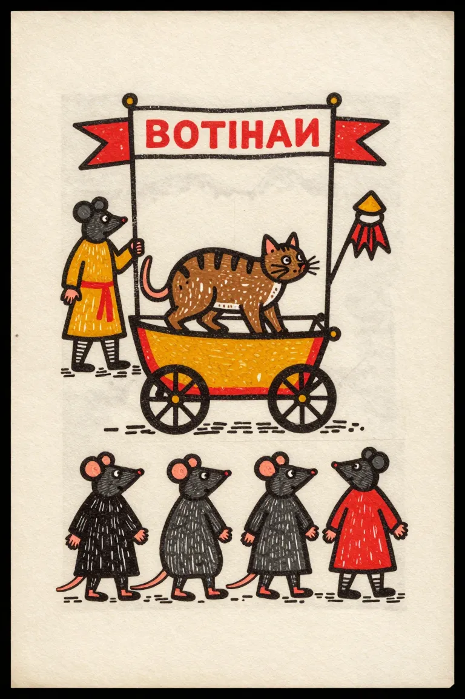

A cheap sheet cut in wood or engraved in copper, printed in black on thin paper and then coloured by hand. Pedlars sold it by the thousand. The line is coarse and the colour is flat and loose, because speed and price mattered most.

Core thesis
A coarse black key line and a few loose hand colours are enough to tell a story that anyone can read at a glance.
Design principles
Cut or engrave one firm black outline for each figure; keep the line 0.8–2.0 mm wide and let it vary.
Print the key line first on thin paper; add the colour afterwards, by brush or through a stencil.
Use 3–5 flat hand colours: vermilion, yellow ochre, green and blue. Do not blend them.
Let the colour miss the line by 2–4 mm in places; the shift shows the hand.
Put a caption or a short verse in Cyrillic under or inside the picture, in a plain cut or type letter.
Show the story in one sheet or in a strip of panels, with figures that stand side by side and almost no depth.
Leave the paper bare for faces and hands; the grey-cream sheet is the light.